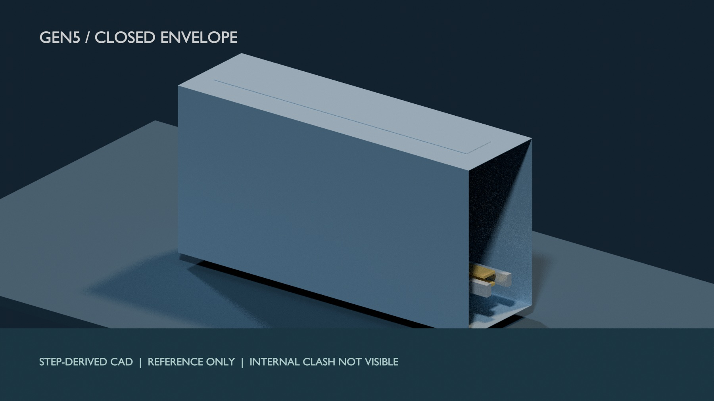

Close the whole machine, not just the gap.
Feed, retain, release, arrest.
Design actual transfer actuation, launch restraints, contacts, clearances, jam and abort states. Re-run exact-solid travel and tolerance checks.
Rate the installed drive.
Select winding, inverter, storage, harness and thermal hardware. Recalculate force across handover, gross energy, losses, brake duty and mass.
Name the interfaces.
Use a specific spacecraft and provider ICD for loads, inhibit, envelope, electromagnetic exposure and deployment constraints.
Compare at the same mission boundary.
A spring dispenser, host manoeuvre, onboard propulsion, transport service and VOLLEY must be evaluated with the same payload, epoch, orbit, full manifest, host resources and installed-system burden. Numeric convergence and uncertainty belong beside the result.


Keep the academic claim precise.
Gen5 review record
Report, results, limits, presenter deck and the failed selection decision.
Companion evidence
Reproducible computational study. No IEEE venue has been selected or peer review completed.
Alternatives and future work
Unselected R1 and other concepts remain separate from the evaluated Gen5 baseline.
A build, instrumented release testing, provider approval and independent technical review remain future activities. No simulation alone supplies those outcomes.